| item | value |
|---|---|
| Input file | GlobalGeoTree.csv |
| Rows after coordinate/species cleaning | 6,263,345 |
| Countries after cleaning | 221 |
| Germany rows used in this report | 205,747 |
GlobalGeoTree Germany, Berlin and NRW visualisation report
0.1 Purpose
This is one cleaned and unified QMD for the Germany, Berlin, and Nordrhein-Westfalen (NRW) parts of the GlobalGeoTree analysis. The rendered HTML hides the code (echo: false) so the report reads like a normal analysis report. The code in the QMD source is still commented and readable.
The dataset used here is always called GlobalGeoTree.csv.
0.2 What I changed after checking the older QMDs and PDFs
| Old visualisation / section | Decision | Reason |
|---|---|---|
| Germany overview table | Keep | It gives the two most important checks before any maps: the number of German observations and the number of recorded species. |
| Germany distribution map | Improve | The old grid map was too pale and hard to interpret. The default map is now a smoother hotspot map, and two alternative map types are included in the setup. |
| Observations by year | Keep | It shows whether the German subset is dominated by a few recent years. This is important context for all later maps. |
| Observations by source: Germany map and bar chart | Keep | The map shows where the main sources are active. The bar chart shows which source groups dominate the dataset. |
| Observations mapped to Bundesländer, plus Bundesländer table, bar chart and map | Keep | The table checks the spatial join, the bar chart ranks states, and the map shows the regional pattern. |
| Berlin district boundary loading and Berlin observations table | Keep | These are essential checks before any Berlin district or density map. |
| Berlin observation/species bar chart | Remove | Observations and species are different measures on very different scales, so the table is clearer than a two-bar plot. |
| Berlin source table and source bar chart | Keep | Berlin is strongly shaped by a few sources, so source composition should be shown. |
| Spatial distribution of Berlin observations | Keep | This was the strongest Berlin visual because it clearly shows observation hotspots inside the city. |
| Berlin local-area table, bar chart, species chart and map | Keep, but rename carefully | The downloaded Berlin file has about 97 polygons, so these are better described as Berlin local areas / district polygons rather than the 12 official Bezirke. |
| Berlin source-by-district heatmap | Remove from the main report | With many local areas and long source names, it becomes visually crowded and hard to read. |
| Berlin top recorded species table and bar chart | Keep | It adds useful biological interpretation, as long as the caption says it is based on recorded observations, not true abundance. |
| NRW boundary check and summary table | Add | The NRW PDF already had a useful boundary workflow and summary, so it belongs in this unified report. |
| NRW source table and source bar chart | Add | NRW is strongly dominated by a few sources, so the source chart is needed. |
| NRW observation map | Add, but improve | A raw point map can overplot, so the default NRW map uses a density/hotspot layer with the NRW boundary. |
| NRW district table, district bar chart, species bar chart and district map | Add | These are useful for comparing NUTS3 districts / Kreise and kreisfreie Städte. |
| NRW source map | Add as a faceted source map | It helps check whether the largest sources have different spatial footprints. |
| NRW common-name / GBIF enrichment | Remove | It depends on internet access and extra packages. Scientific names are more reproducible. |
| NRW category composition | Remove | The user confirmed that category should be ignored because it is not available in the full data file. |
| Germany category and climate-zone sections | Remove | Category is not available in the full file, and the climate-zone section needs an extra polygon file. |
| Very wide first-10-row preview tables | Remove | They were not readable in the rendered report and did not directly answer the visualisation questions. |
0.3 Density map options used in this report
The report now keeps several density-style maps so you can compare them directly in the rendered HTML. This is better than forcing one single map style too early.
The main comparison styles are:
- Points + contours: good when you want to see both the individual recorded points and the broader hotspot shapes.
- Smooth filled density: good for a clean presentation view of hotspots.
- Gridded heatmap: good when you want counts in visible cells rather than a smoothed surface.
- Sampled point map: good as an honest reference map showing raw record locations.
My recommendation is to keep points + contours and smooth filled density in the final report, and use the gridded heatmap as a comparison/checking visual.
0.4 Setup
0.5 Load and clean the observation data
The data file is large, so the script reads only the columns needed for this report. This keeps the report faster and makes the workflow easier to understand.
0.6 Germany overview table
Why this table is needed: before drawing any maps, I want a quick check of how much German data is available. This also keeps the requested metric table in the report.
| metric | value |
|---|---|
| Germany observations | 205,747 |
| Germany recorded species | 464 |
Interpretation. The observations value counts records, while the recorded species value counts unique scientific species names. These two numbers answer different questions, so they should stay separate.
0.7 Load Bundesländer boundaries
The Germany state maps need Bundesländer polygons. The code first looks for a local GeoJSON file and then tries the public GISCO NUTS1 file.
| item | value |
|---|---|
| Boundary status | Loaded Bundesländer / NUTS1 boundaries from data/external/germany_nuts1_2021.geojson |
| Number of Bundesländer polygons | 16 |
0.8 Distribution of observations in Germany
Why this visual is needed: the dataset contains coordinates, so a map is the fastest way to see where records are concentrated. Because one map type does not tell the whole story, the report now keeps several Germany density visualisations for comparison.
Suggested reading order: start with the points + contours map, check the smooth filled density map for a cleaner hotspot view, and use the grid map as a non-smoothed count-based comparison.
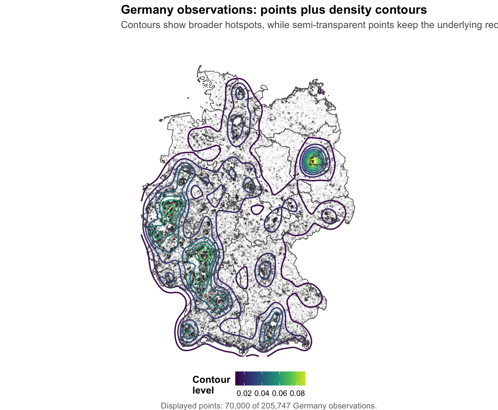
Interpretation. Darker/higher-density areas show places with more recorded observations. This should be interpreted as observation intensity, because a place can have many records due to active platforms, active observers, or easier access.
0.8.1 Germany density map comparison
These extra maps are kept on purpose so you can compare styles in the rendered HTML.
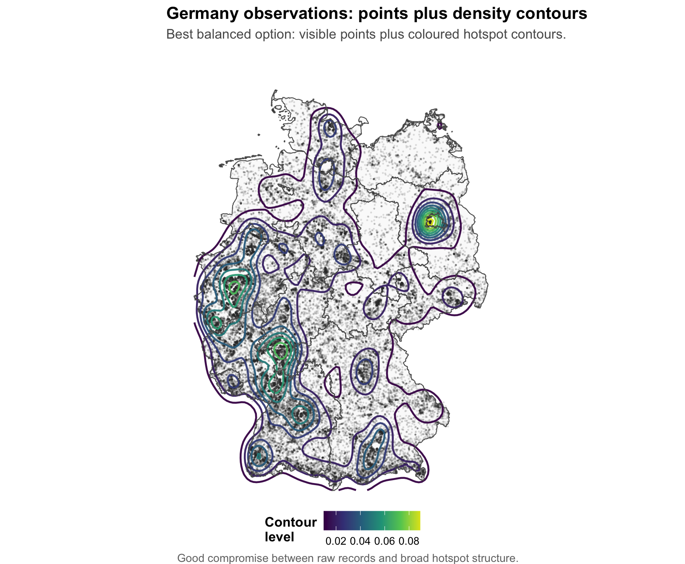
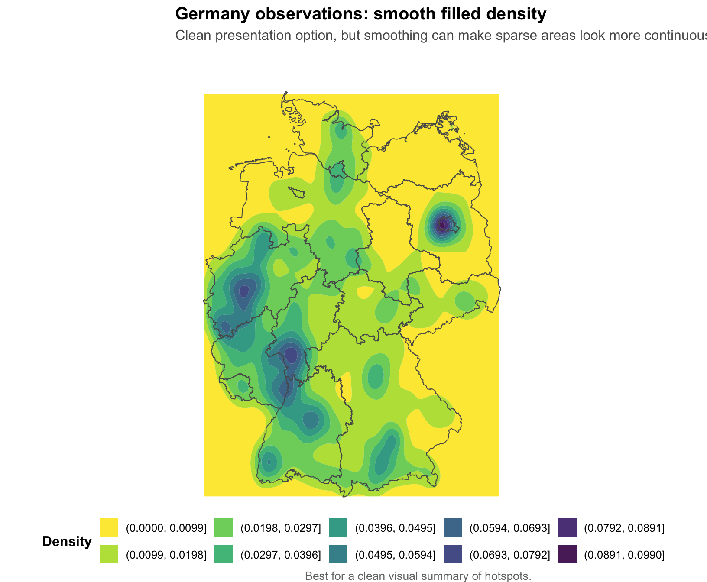
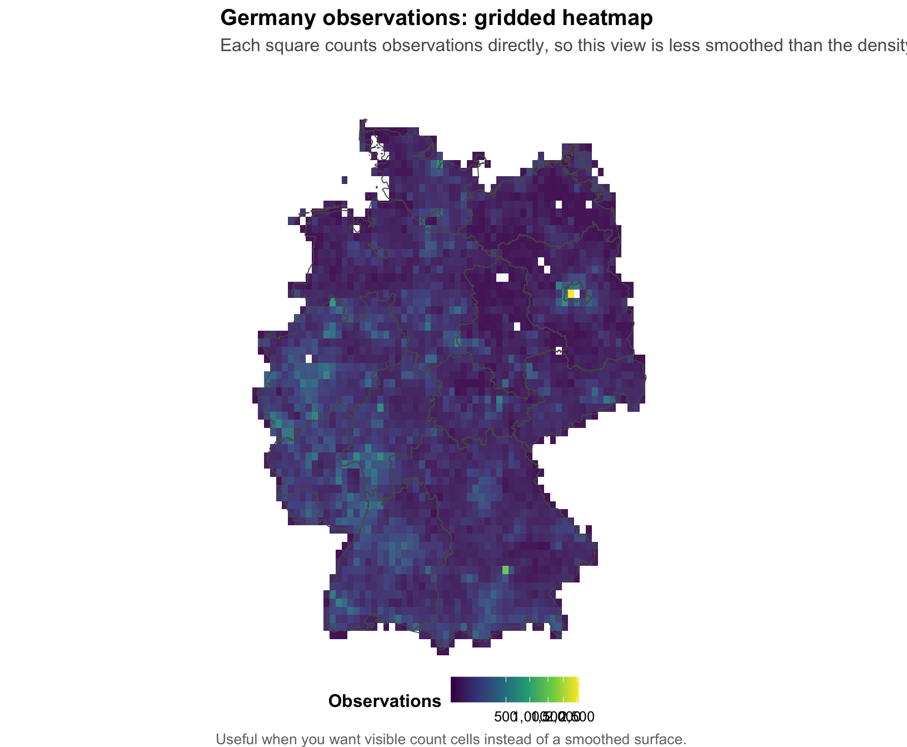
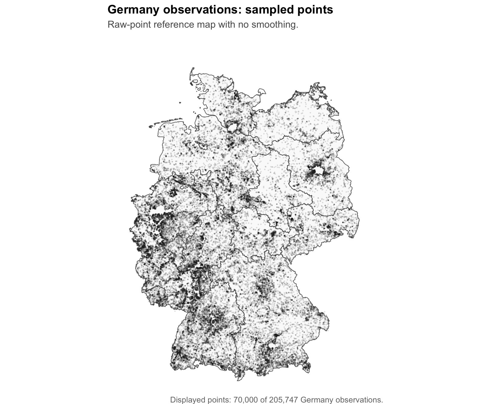
Quick recommendation. If you want one final Germany map, I would keep points + contours as the main option and smooth filled density as the backup presentation option.
0.9 Observations by year
Why this visual is needed: the year chart checks whether the dataset is balanced through time or dominated by a few recent years. This matters because spatial maps can be influenced by when observations were collected.
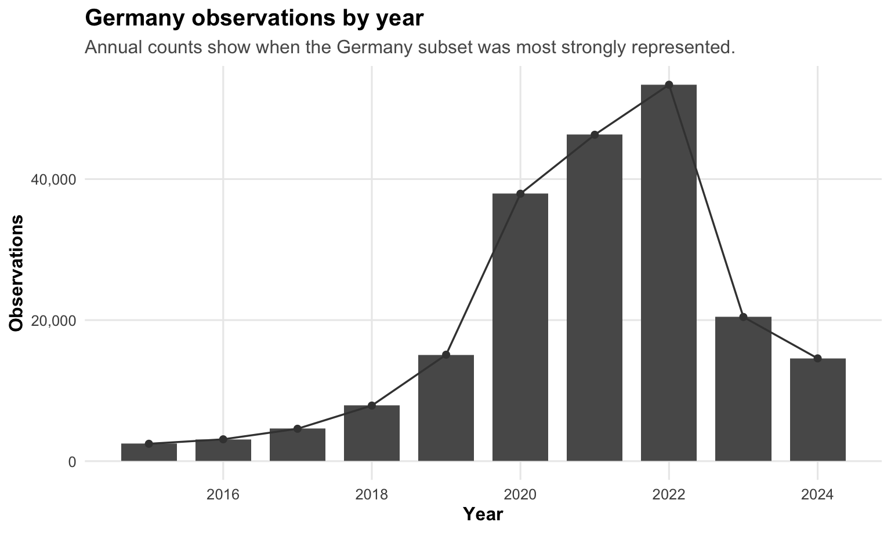
Interpretation. Peaks in this chart should be read as peaks in recording activity. They do not automatically mean that more trees existed in those years.
0.10 Observations by source on the country map
Why this visual is needed: different data sources can have different spatial footprints. The map helps check whether one source dominates certain areas of Germany.
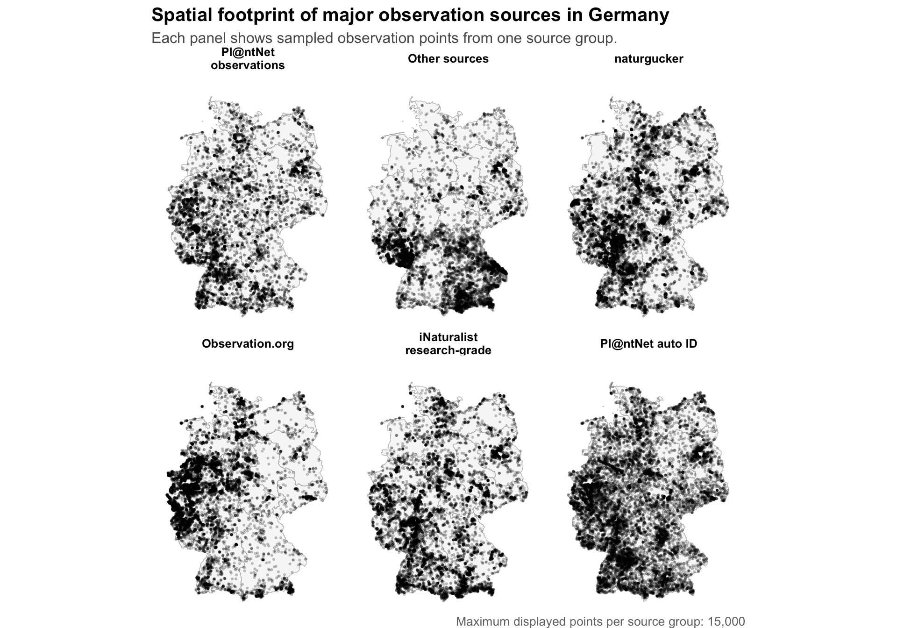
Interpretation. This map is useful for spotting source bias. If one source is dense in one region and another source is dense elsewhere, regional patterns may partly reflect data collection rather than biology.
0.11 Observations by source as a bar chart
Why this visual is needed: the map shows geography, but the bar chart makes it easier to compare source sizes. Both are needed because they answer different questions.
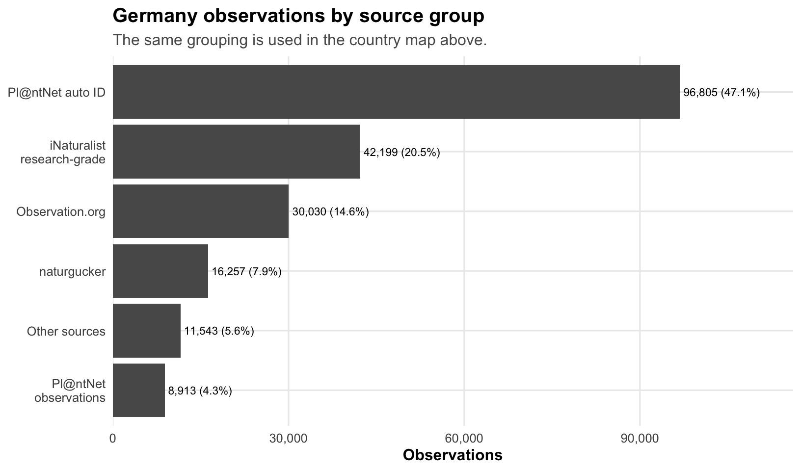
Interpretation. The largest bar shows which source contributes the most records. This is important because a dominant source can strongly shape the spatial pattern seen on the maps.
0.12 Short note on the two Pl@ntNet source names
Pl@ntNet observations and Pl@ntNet auto ID are both Pl@ntNet-derived, but they do not mean exactly the same thing. In this report, I keep them separate because they use different validation routes: one is the regular shared-observation dataset, and the other is the automatically identified occurrences dataset.
0.13 Observations mapped to Bundesländer
Why this step is needed: the original data has coordinates, not a ready-made Bundesland field. To compare federal states, the points must first be spatially joined to the Bundesländer polygons.
| metric | value |
|---|---|
| Germany observations before Bundesland join | 205,747 |
| Germany observations matched to a Bundesland | 205,143 |
| Bundesländer with at least one observation | 16 |
| bundesland | observations | species | sources |
|---|---|---|---|
| Nordrhein-Westfalen | 36,534 | 243 | 16 |
| Bayern | 34,142 | 301 | 25 |
| Baden-Württemberg | 28,112 | 287 | 21 |
| Niedersachsen | 21,091 | 228 | 16 |
| Rheinland-Pfalz | 18,536 | 235 | 17 |
| Hessen | 18,366 | 237 | 13 |
| Brandenburg | 8,308 | 196 | 14 |
| Sachsen | 7,674 | 196 | 14 |
| Schleswig-Holstein | 7,599 | 175 | 11 |
| Thüringen | 5,634 | 168 | 12 |
| Berlin | 5,189 | 158 | 13 |
| Mecklenburg-Vorpommern | 5,024 | 185 | 11 |
| Sachsen-Anhalt | 4,790 | 165 | 8 |
| Saarland | 2,753 | 141 | 11 |
| Hamburg | 1,081 | 106 | 8 |
| Bremen | 310 | 68 | 6 |
Interpretation. This table is the cleanest check that the spatial join worked. If many Germany points were not matched, the boundary data or coordinate quality should be checked before trusting the maps.
0.14 Bundesländer bar chart
Why this visual is needed: the bar chart is the best way to rank federal states because each state is compared on the same axis.
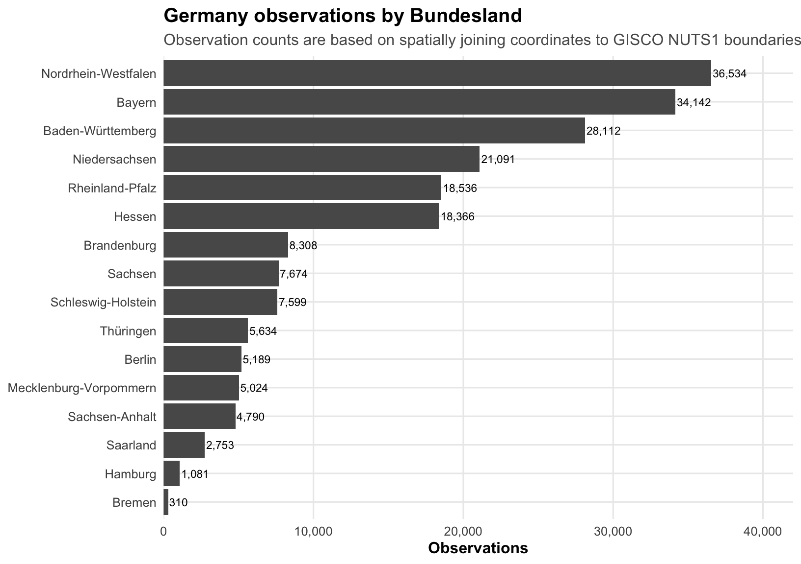
Interpretation. This chart shows which Bundesländer dominate the German subset. It should not be read as a direct comparison of tree abundance because the number of observations also depends on recording effort.
0.15 Bundesländer map
Why this visual is needed: the map complements the bar chart by showing where high-record states are located geographically.
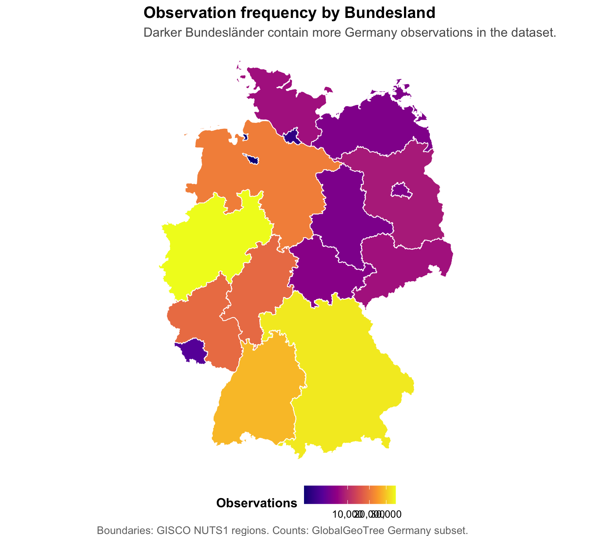
Interpretation. This map is useful for spatial context, but it is less precise for ranking than the bar chart. Larger states can also look visually more important because they occupy more map area.
1 Berlin
1.1 Load Berlin district boundaries
Berlin is handled separately because it needs a finer boundary layer than Bundesländer. The public fallback file contains many small Berlin local-area polygons, so I describe the results as Berlin district/local-area results.
| item | value |
|---|---|
| Berlin district/local-area boundary status | Loaded Berlin district/local-area boundaries from data/external/berlin_districts.geojson |
| Number of Berlin polygons | 97 |
1.2 Berlin observations table
Why this table is needed: it shows how Berlin observations were selected and gives the main record counts before the Berlin maps.
| metric | value |
|---|---|
| Berlin filtering method | Spatial join to Berlin district/local-area polygons |
| Berlin observations | 5,192 |
| Berlin recorded species | 158 |
| Available source values | 13 |
| Available years | 2015-2024 |
Interpretation. I removed the old observation/species bar chart because it put two very different measures on one axis. This table is clearer.
1.3 Berlin observation sources
Why this visual is needed: Berlin observations are not equally distributed across sources, so source composition is important context for every Berlin map.
| source_short | observations | share | label |
|---|---|---|---|
| iNaturalist research-grade | 3,133 | 60.3% | 3,133 (60.3%) |
| Pl@ntNet auto ID | 1,241 | 23.9% | 1,241 (23.9%) |
| ArtenFinder | 388 | 7.5% | 388 (7.5%) |
| Pl@ntNet observations | 151 | 2.9% | 151 (2.9%) |
| naturgucker | 108 | 2.1% | 108 (2.1%) |
| Observation.org | 101 | 1.9% | 101 (1.9%) |
| EOD – eBird Observation Dataset | 55 | 1.1% | 55 (1.1%) |
| BoBO - Botanic Garden and Botani… | 7 | 0.1% | 7 (0.1%) |
| Xeno-canto - Bird sounds from ar… | 4 | 0.1% | 4 (0.1%) |
| 7a3679ef-5582-4aaa-81f0-8c2545ca… | 1 | 0.0% | 1 (0.0%) |
| Database for alien invasive plan… | 1 | 0.0% | 1 (0.0%) |
| Database of field studies on env… | 1 | 0.0% | 1 (0.0%) |
| Spatially explicit database of t… | 1 | 0.0% | 1 (0.0%) |
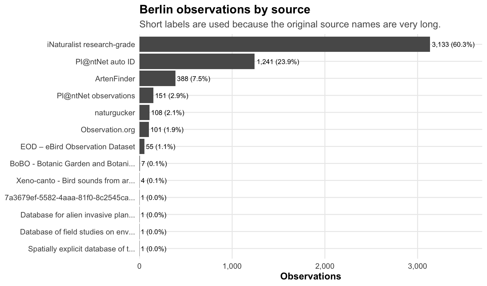
Interpretation. This chart tells us which platforms shape the Berlin subset most. If one source dominates, the Berlin hotspots may partly show that source’s recording behaviour.
1.4 Spatial distribution of Berlin observations
Why this visual is needed: this is the clearest Berlin plot because it shows where observations cluster inside the city. The density layer avoids overplotting, and the local-area borders give spatial context.
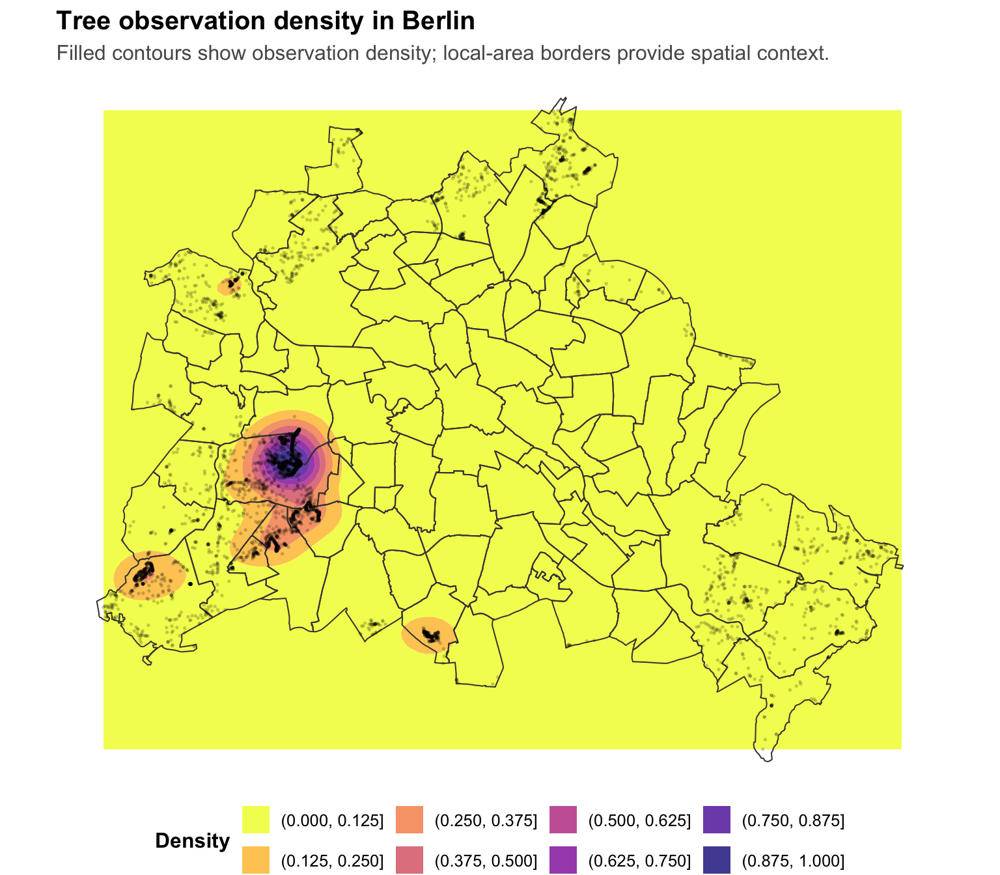
Interpretation. The density map highlights observation hotspots inside Berlin. Like the Germany maps, it is a map of recorded observations, not a direct map of all trees in the city.
1.5 Berlin local areas: observations and species
Why this section is needed: the density map shows hotspots, but district/local-area summaries make the pattern easier to compare and check.
| district | observations | species | sources |
|---|---|---|---|
| Grunewald | 1,714 | 87 | 7 |
| Wannsee | 490 | 76 | 8 |
| Dahlem | 298 | 39 | 7 |
| Zehlendorf | 274 | 43 | 6 |
| Hakenfelde | 273 | 46 | 8 |
| Marienfelde | 261 | 49 | 6 |
| Buch | 247 | 60 | 7 |
| Westend | 165 | 32 | 5 |
| Köpenick | 163 | 45 | 7 |
| Rahnsdorf | 135 | 36 | 5 |
| Nikolassee | 127 | 43 | 7 |
| Müggelheim | 120 | 39 | 8 |
| Blankenfelde | 116 | 41 | 7 |
| Tegel | 114 | 29 | 8 |
| Französisch Buchholz | 109 | 35 | 5 |
| Schlachtensee | 92 | 22 | 4 |
| Kladow | 60 | 23 | 5 |
| Gatow | 45 | 24 | 5 |
| Schmöckwitz | 44 | 24 | 7 |
| Heiligensee | 40 | 15 | 5 |
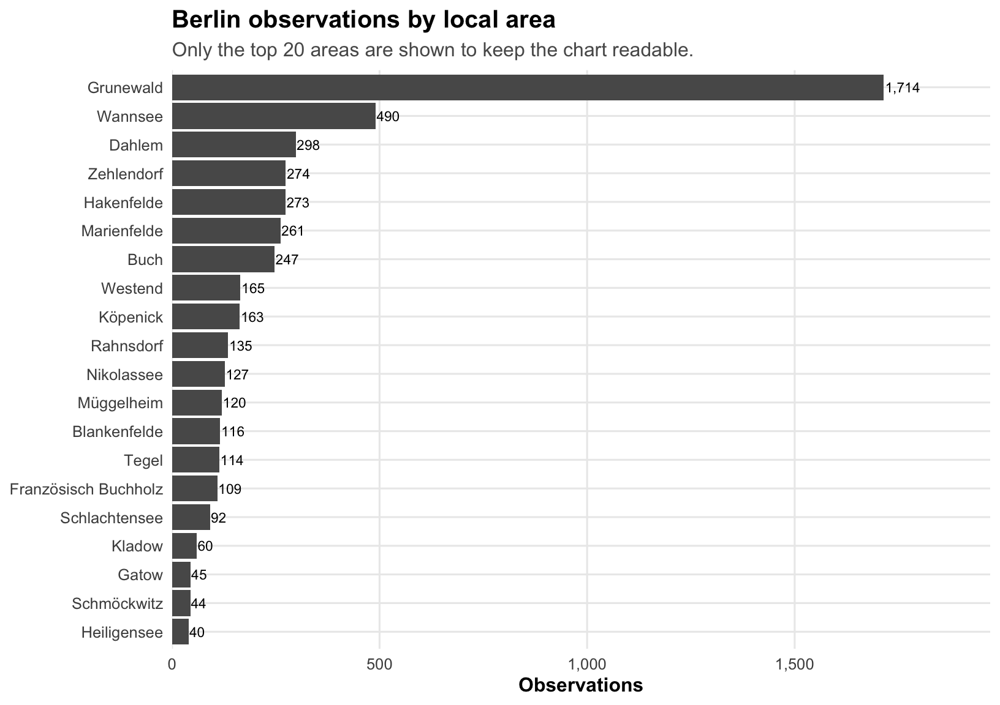
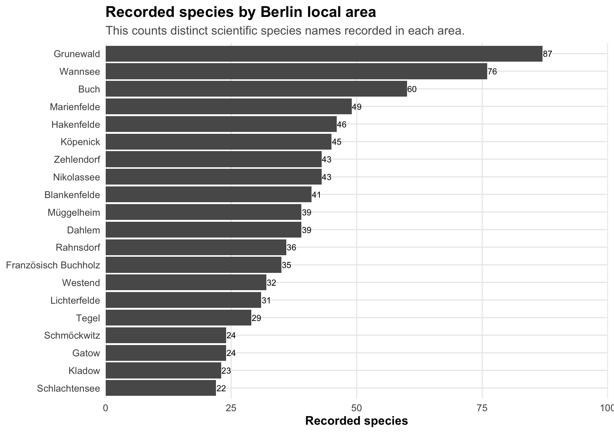
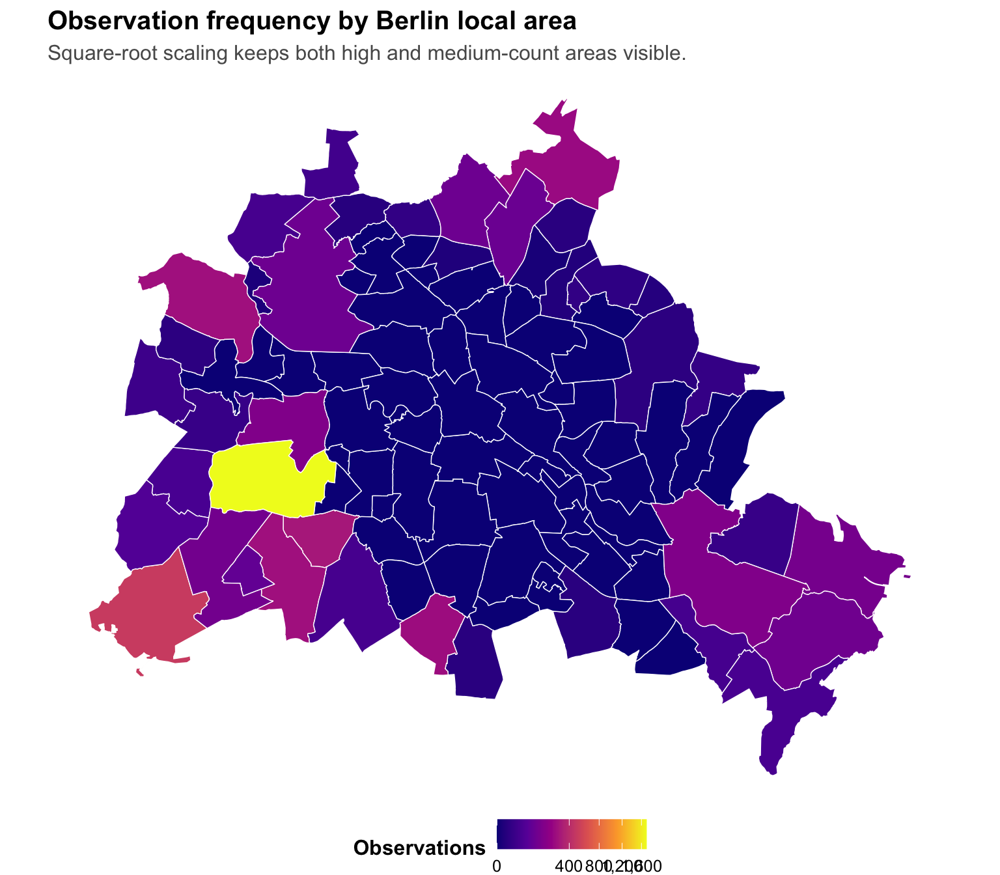
Interpretation. The bar charts are better for comparing exact ranks, while the map is better for seeing where the high-record areas are located.
1.6 Top recorded species in Berlin
Why this visual is needed: this gives a simple biological summary after the spatial summaries. It should still be read as recorded observations, not a census of tree abundance.
| level3_species | observations | share |
|---|---|---|
| Cupania sylvatica | 750 | 14.4% |
| Fagus sylvatica | 373 | 7.2% |
| Quercus oblongata | 258 | 5.0% |
| Dryocopus martius | 234 | 4.5% |
| Prunus padus | 230 | 4.4% |
| Euonymus europaeus | 218 | 4.2% |
| Schefflera macrophylla | 180 | 3.5% |
| Prunus serotina | 169 | 3.3% |
| Sorbus aucuparia | 164 | 3.2% |
| Robinia pseudoacacia | 158 | 3.0% |
| Carpinus betulus | 108 | 2.1% |
| Croton laccifer | 107 | 2.1% |
| Sambucus nigra | 97 | 1.9% |
| Symphoricarpos albus | 97 | 1.9% |
| Alnus glutinosa | 93 | 1.8% |
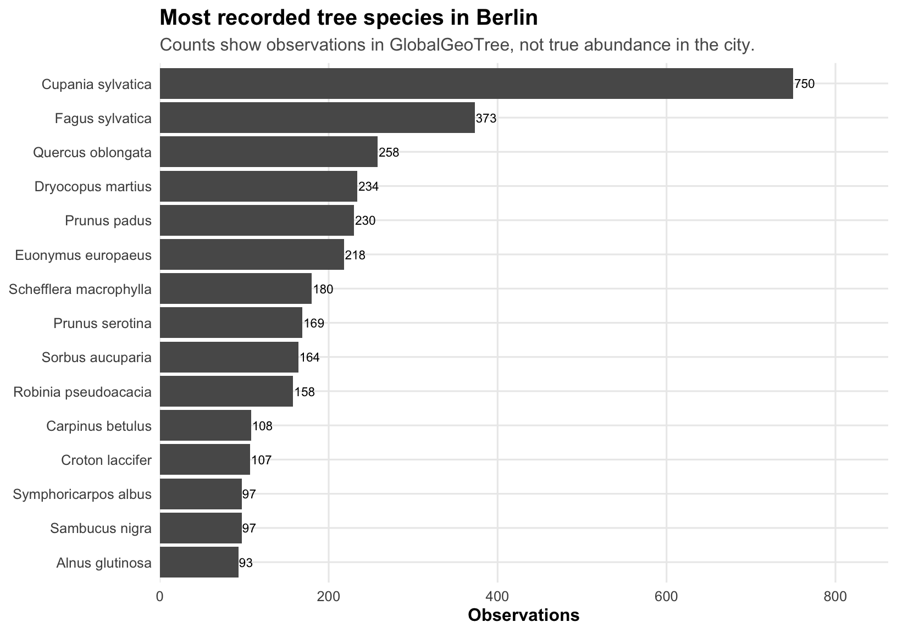
2 Nordrhein-Westfalen (NRW)
2.1 Load NRW boundaries
Why this step is needed: NRW needs one boundary for filtering observations and NUTS3 boundaries for district-level comparisons. NUTS3 regions correspond approximately to Kreise and kreisfreie Städte.
| item | value |
|---|---|
| NRW boundary available | Yes |
| NUTS3 boundary status | Loaded NUTS3 boundaries from data/external/germany_nuts3_2021.geojson |
| NRW district polygons | 53 |
2.2 Filter observations to NRW
Why this table is needed: before mapping NRW, we need to know how many observations and species were found and whether filtering used real boundaries or a fallback box.
| metric | value |
|---|---|
| NRW filtering method | Spatial join to official NUTS1 NRW boundary |
| NRW observations | 36,534 |
| NRW recorded species | 243 |
| NRW recorded genera | 126 |
| NRW recorded families | 61 |
| Available source values | 16 |
| Available years | 2015-2024 |
Interpretation. This table is a necessary quality check. If the boundary join is used, the NRW subset is more reliable than a simple bounding-box filter.
2.3 NRW observation sources
Why this visual is needed: the NRW PDF showed that a few data sources contribute most records, so source composition should stay in the unified report.
| source_short | observations | share | label |
|---|---|---|---|
| Pl@ntNet auto ID | 15,693 | 43.0% | 15,693 (43.0%) |
| Observation.org | 14,288 | 39.1% | 14,288 (39.1%) |
| iNaturalist research-grade | 3,436 | 9.4% | 3,436 (9.4%) |
| naturgucker | 1,556 | 4.3% | 1,556 (4.3%) |
| Pl@ntNet observations | 1,250 | 3.4% | 1,250 (3.4%) |
| EOD – eBird Observation Dataset | 222 | 0.6% | 222 (0.6%) |
| ArtenFinder | 66 | 0.2% | 66 (0.2%) |
| Spatially explicit database of t… | 6 | 0.0% | 6 (0.0%) |
| 6ac3f774-d9fb-4796-b3e9-92bf6c81… | 3 | 0.0% | 3 (0.0%) |
| Database for alien invasive plan… | 3 | 0.0% | 3 (0.0%) |
| 14d5676a-2c54-4f94-9023-1e8dcd82… | 2 | 0.0% | 2 (0.0%) |
| 8a863029-f435-446a-821e-275f4f64… | 2 | 0.0% | 2 (0.0%) |
| Anymals+plants - Citizen Science… | 2 | 0.0% | 2 (0.0%) |
| Birda - Global Observation Dataset | 2 | 0.0% | 2 (0.0%) |
| Xeno-canto - Bird sounds from ar… | 2 | 0.0% | 2 (0.0%) |
| The Fungal, Lichen and Plant Col… | 1 | 0.0% | 1 (0.0%) |
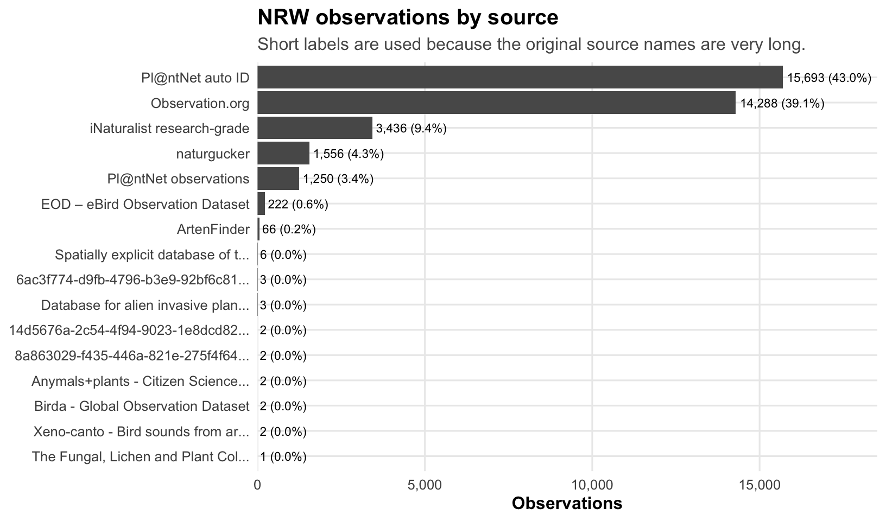
Interpretation. This chart explains source bias before the maps. A dominant source can make one region look more important simply because that platform has more records there.
2.4 NRW observation density maps
Why this visual is needed: a map is needed to see the spatial distribution inside NRW, but a raw point map can be too crowded. Because the best style is not obvious, this report keeps several NRW density visualisations for direct comparison.
My recommendation: the points + contours map is the best balanced option. It keeps the underlying point pattern visible, but it also shows smoother hotspot zones. The smooth filled density map is also good for presentation.
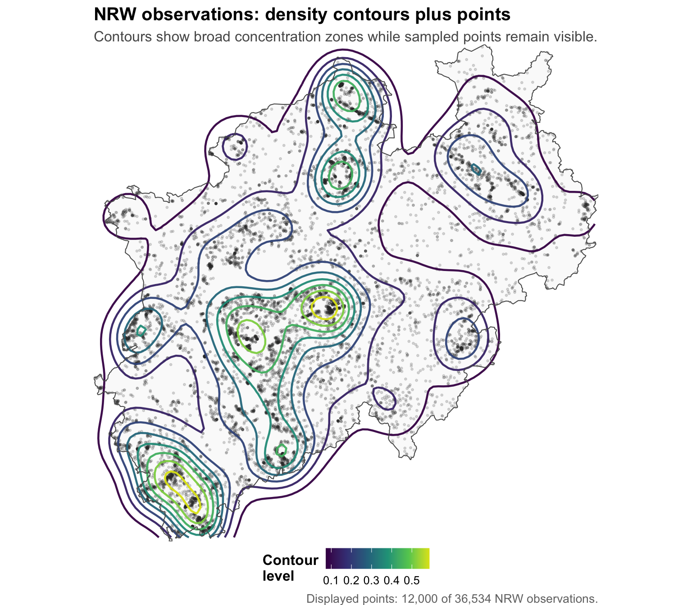
Interpretation. This map is good for seeing NRW hotspots, but it should not be interpreted as true tree abundance. It is a map of where records are concentrated.
2.4.1 NRW density map comparison
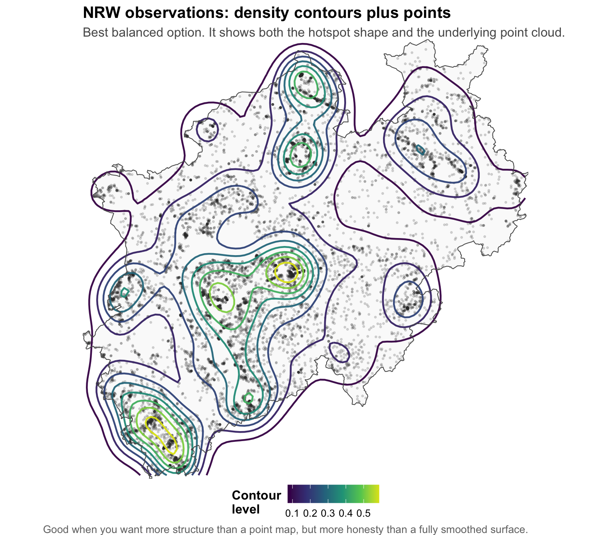
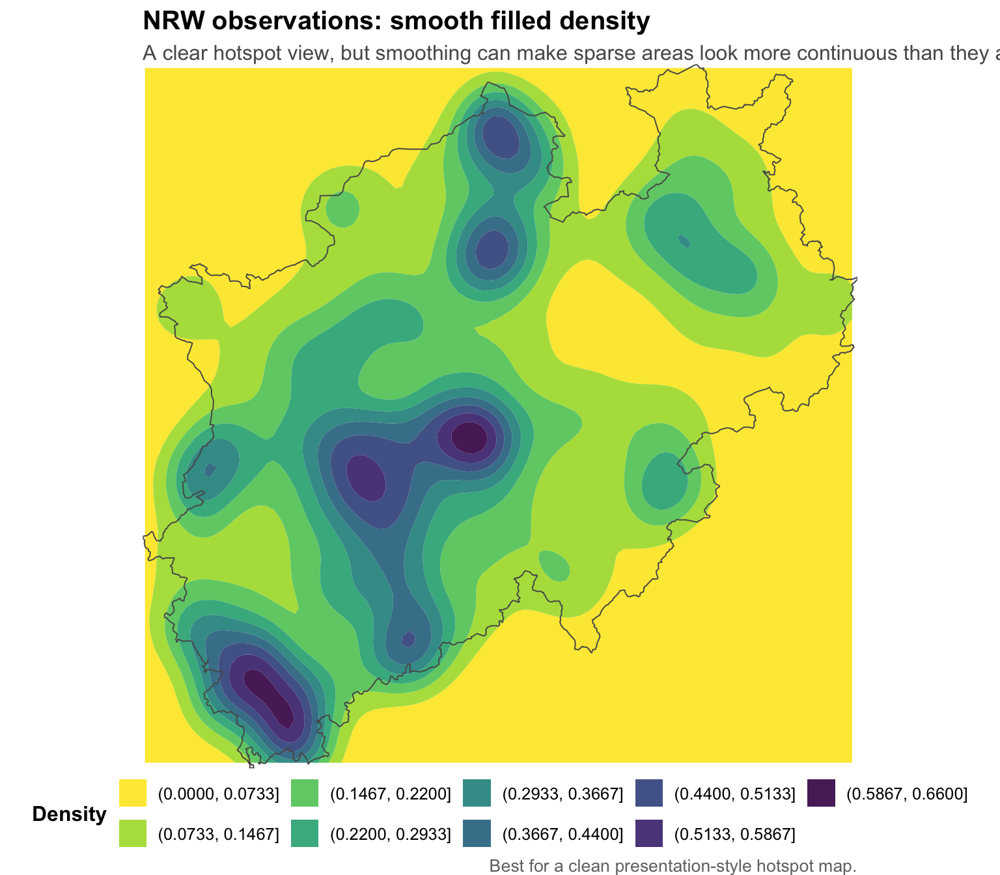
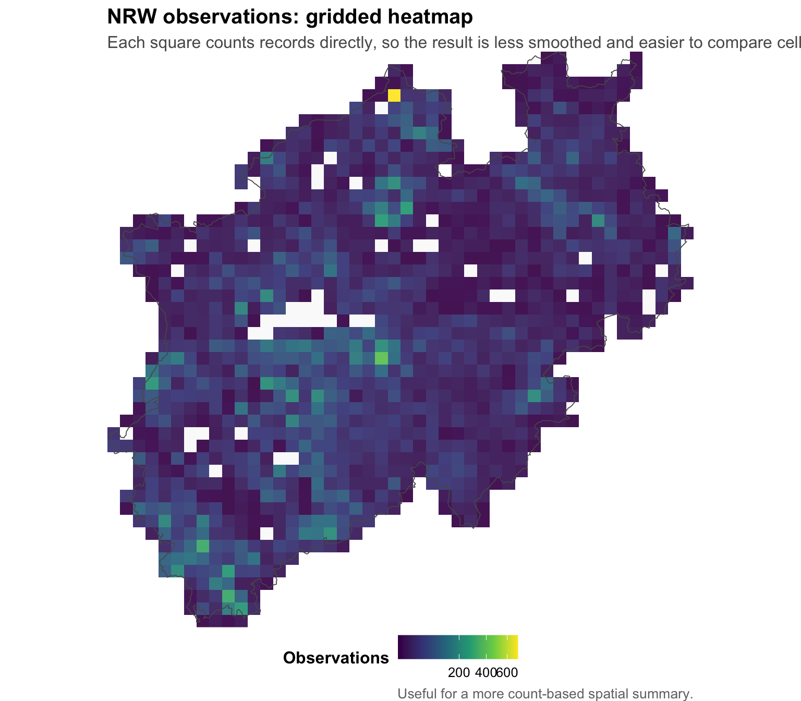
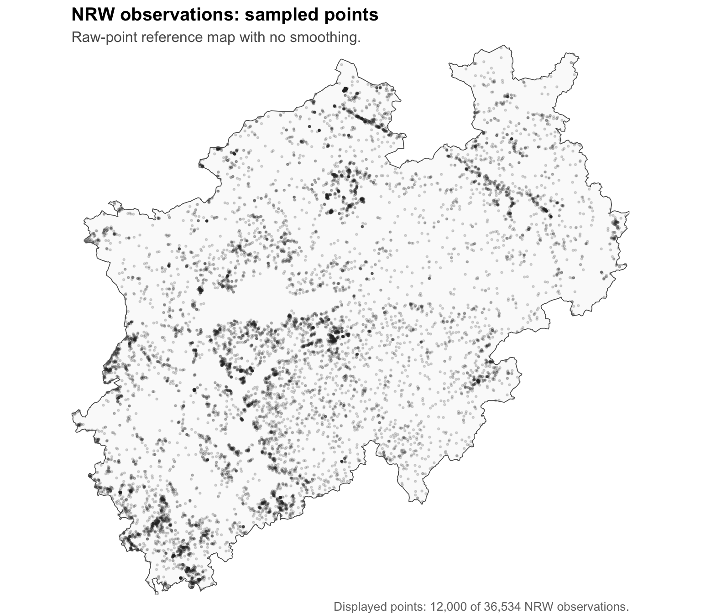
Quick recommendation. If you want to keep two NRW maps, I would keep density contours plus points and smooth filled density. The contour version is more informative, while the filled version is cleaner.
2.5 NRW districts: observations and species
Why this step is needed: NUTS3 districts provide a useful middle scale between individual points and the whole NRW region.
| district_id | district_name | observations | species | sources |
|---|---|---|---|---|
| DEA37 | Steinfurt | 2,561 | 126 | 6 |
| DEA28 | Euskirchen | 2,548 | 103 | 7 |
| DEA2D | Städteregion Aachen | 1,850 | 110 | 8 |
| DEA2C | Rhein-Sieg-Kreis | 1,688 | 106 | 7 |
| DEA57 | Hochsauerlandkreis | 1,603 | 92 | 7 |
| DEA1E | Viersen | 1,358 | 106 | 8 |
| DEA33 | Münster, Kreisfreie Stadt | 1,323 | 99 | 8 |
| DEA26 | Düren | 1,081 | 84 | 7 |
| DEA58 | Märkischer Kreis | 1,061 | 80 | 7 |
| DEA34 | Borken | 1,028 | 98 | 6 |
| DEA1C | Mettmann | 1,004 | 98 | 6 |
| DEA45 | Lippe | 1,001 | 85 | 7 |
| DEA53 | Hagen, Kreisfreie Stadt | 998 | 79 | 6 |
| DEA36 | Recklinghausen | 961 | 89 | 7 |
| DEA56 | Ennepe-Ruhr-Kreis | 890 | 87 | 6 |
| DEA1F | Wesel | 846 | 96 | 6 |
| DEA2B | Rheinisch-Bergischer Kreis | 821 | 83 | 6 |
| DEA2A | Oberbergischer Kreis | 755 | 74 | 9 |
| DEA1B | Kleve | 728 | 93 | 6 |
| DEA35 | Coesfeld | 710 | 87 | 6 |
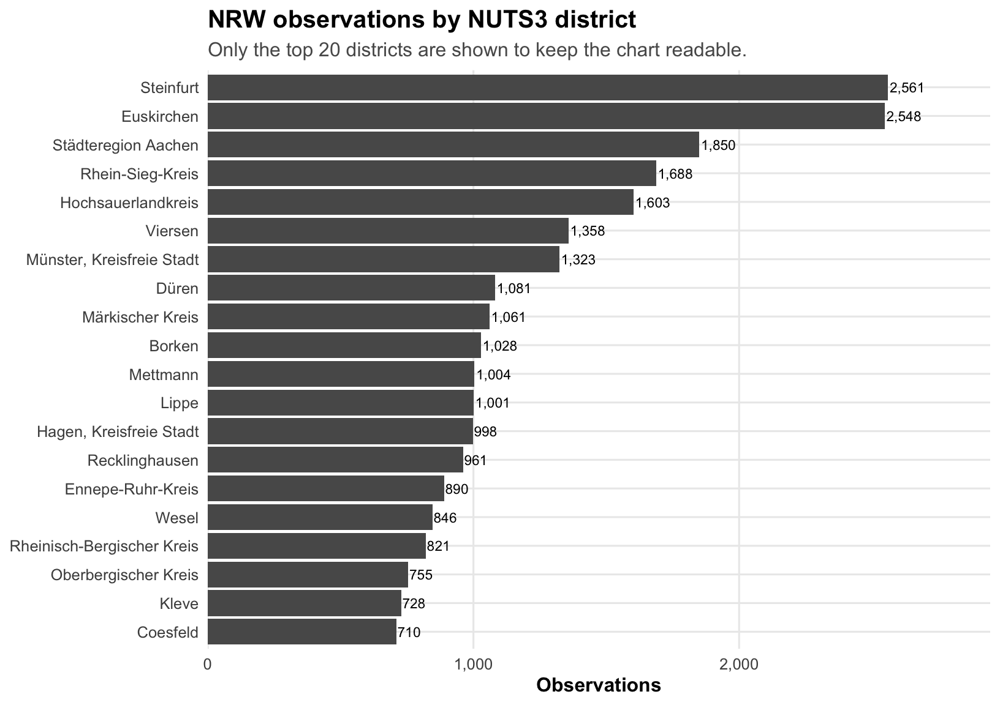
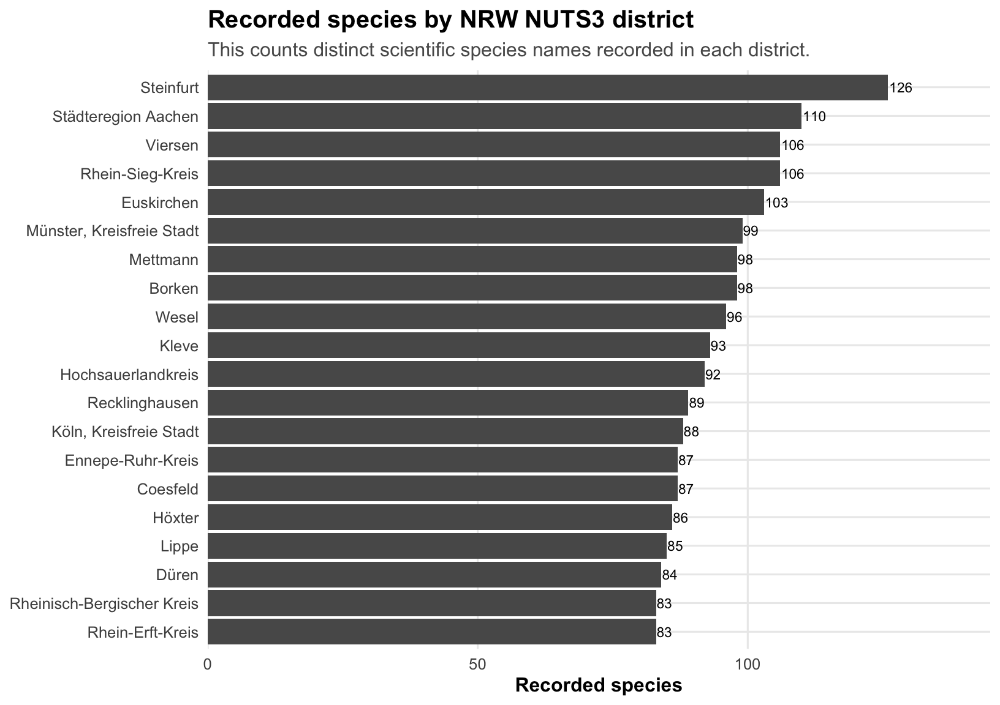
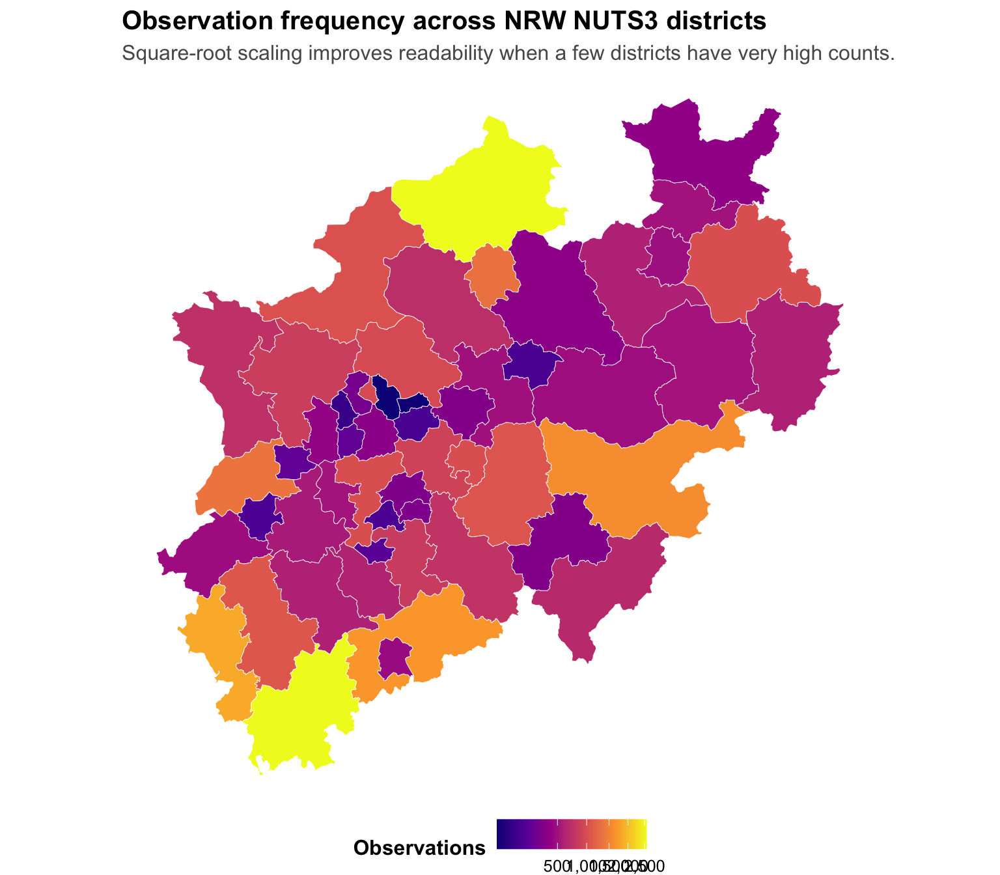
Interpretation. The district bar charts are best for ranking. The district map is best for seeing whether high-record districts are clustered geographically.
2.6 Sources on the NRW map
Why this visual is needed: the source bar chart shows size, but this faceted map checks whether the largest sources cover the same parts of NRW.
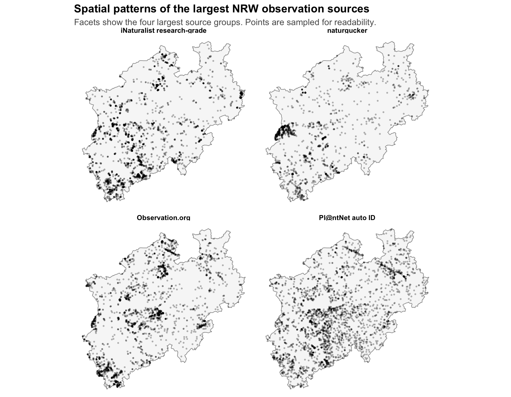
Interpretation. If source panels look different, NRW spatial patterns may partly reflect source coverage. This makes the source map useful next to the overall density map.
2.7 Top recorded species in NRW
Why this visual is needed: this gives a simple taxonomic summary for NRW without using optional GBIF common-name lookups. Scientific names are kept because they are more reproducible.
| level3_species | observations | share |
|---|---|---|
| Fagus sylvatica | 3,896 | 10.7% |
| Ilex aquifolium | 2,728 | 7.5% |
| Vaccinium myrtillus | 2,011 | 5.5% |
| Cupania sylvatica | 1,827 | 5.0% |
| Sorbus aucuparia | 1,576 | 4.3% |
| Prunus padus | 1,526 | 4.2% |
| Dryocopus martius | 1,229 | 3.4% |
| Sambucus racemosa | 1,228 | 3.4% |
| Corylus avellana | 1,203 | 3.3% |
| Prunus spinosa | 1,172 | 3.2% |
| Croton laccifer | 1,053 | 2.9% |
| Cytisus scoparius | 917 | 2.5% |
| Schefflera macrophylla | 910 | 2.5% |
| Euonymus europaeus | 849 | 2.3% |
| Viburnum opulus | 761 | 2.1% |
| Quercus oblongata | 714 | 2.0% |
| Sambucus nigra | 605 | 1.7% |
| Carpinus betulus | 577 | 1.6% |
| Alnus glutinosa | 462 | 1.3% |
| Erica excelsa | 440 | 1.2% |
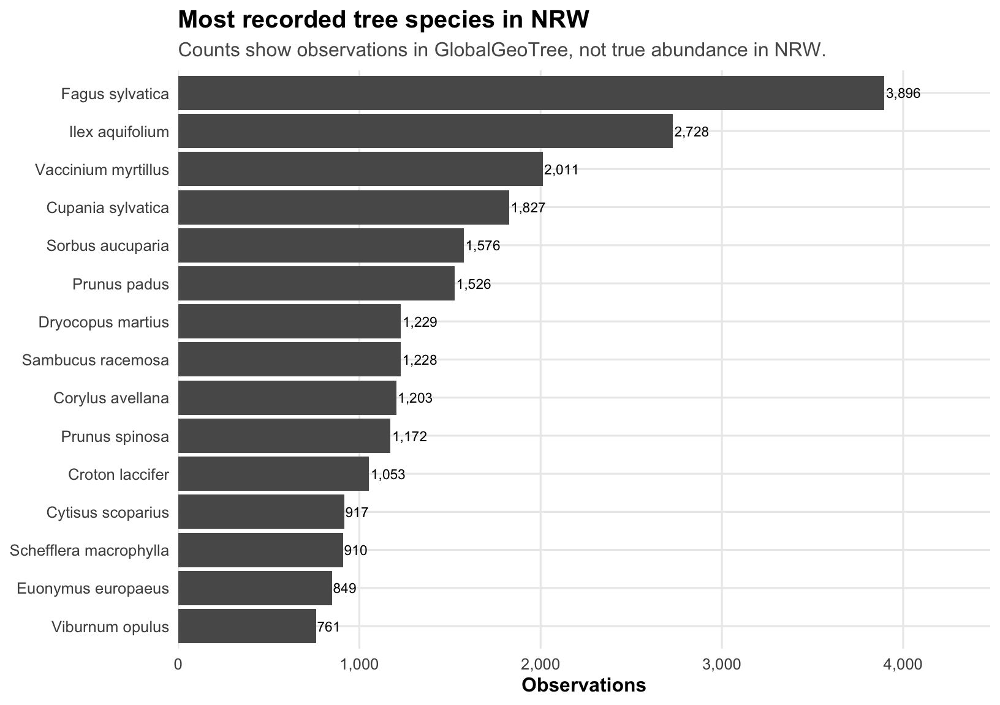
2.8 Final interpretation notes
The most useful visualisations are the ones that compare the same records in different ways: Germany maps for national spatial patterns, year counts for time, source charts for data bias, Bundesländer and NRW district charts for regional comparison, and Berlin density/local-area plots for city-level clustering.
The map and bar-chart pairs are intentionally kept together. Maps are good for spatial patterns, but bar charts are better for exact comparisons.
All maps should be interpreted as maps of recording intensity in GlobalGeoTree.csv. High values can reflect true tree presence, but they can also reflect where observers and data platforms are more active.